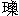

| 1. | 史／編年／明實錄／太宗／卷二百十 永樂十七年三月／2日(P.2127) |
| ○丙午○哈密土魯番等處回回土 魯迷失等百三十七人來朝 貢馬凡賜鈔萬錠文綺七十匹彩絹  彩絹:廣本抱本彩作綵。 彩絹:廣本抱本彩作綵。二百匹 |
|
| 2. | 史／編年／明實錄／世宗／卷三十八 嘉靖三年四月／25日(P.975) |
| ○己未以浙江潮患命廵海副使李熙兼理提防 兼理提防:抱本閣本提作隄，是也。 時 魯迷番王遣人 貢獅子西牛 西牛:閣本西作犀，下同，是也。珊瑚玉石等物邊臣以聞下禮部議納否於是給事中鄭一鵬言 魯迷既非常 貢之國而獅子西牛則 陛下初年所必縱者也况非土性養須夷人受之徒靡國用卻之有光 聖德珊瑚玉石不濟饑寒將安用之下部併議 琉球國 貢使金良等言其國先有正議大夫鄭繩等領送謝恩方物渡海為風所漂未至而表文在此請得先進遣還禮部議可詔從之 隰州王府庶人仕𡍫以出城行刼其子成鍏私詣闕下奏擾詔以仕𡍫押發高墻禁住成鍏勒回命鎮廵等官勘奏處治 |
|
| 3. | 史／編年／明實錄／世宗／卷四十七 嘉靖四年正月／25日(P.1208) |
| ○甲申○陞山西按察司僉事董
琦為河南布政使司右參議浙江溫州府同知顧 顧:閣本作顧𤩰。為山東按察司僉事整飭沂州兵備刑部雲南司員外郎宋欽為山西按察司僉事 復服闋雲南道御史 復服闋雲南道御史:三本復下有除字，是也。徐岱於浙江道提督三邊軍務兵部尚書金獻民引疾乞休 上優詔褒留促令回部管事不允辭 榮王祐樞請給常德府稅課司沅江河泊所酉港天心團坪淥池等處歲鈔戶供祭祀 戶供祭祀:廣本閣本戶作以，是也。戶部尚書秦金言王府祭祀皆取辦有司本府不自為備所乞稅課原以供官吏旗軍俸粮難狥其請 上特許以沅江河泊等所歲鈔給之 初番夷僧 番夷僧:三本作番夷魯迷，是也。叩関求 貢廵撫甘肅都御史陳九疇請卻之旨令起送 旨令起送:廣本閣本旨上有得字，是也。十餘人赴京方物准人 貢人貢:舊校改人作入。禮部尚書執奏 禮部尚書執奏:廣本閣本書下有席書二字，是也。言 魯迷非會典所載朝 貢之地真偽未可辦 未可辦:舊校改辦作辨。頃土魯番侵犯甘肅数問進 貢之人而甘州撫夷官又於 魯迷数內查出土魯番之眾則其詐甚明必土魯番 欲謀入寇故先設此為向導 向導:舊校改向作嚮。耳臣竊謂大戎之心不可料以常理帝王柔遠應之必有機宜况所 貢獅子西牛 西牛:閣本西作犀，是也。之類豢養之費甚為不經 甚為不經:廣本抱本經作輕，是也。其珊瑚玉石寒不可衣飢不可食又焉用之請令守臣卻還不受善遣出塞仍重治所獲土魯番姦回之罪疏上 詔遵前旨而令鎮廵官覈治所獲土魯番夷時登聞鼓下狀詞甚多有引刀自傷以明其冤者給事 給事:廣本閣本事下有中字，是也。巴思明以 聞 上諭刑部迩來內外法司多不能為民分理冤抑故奉訴 奉訴:三本奉作奏，是也。紛紜自今凡有奏狀即宜擇可行者行之毋徒立案廢閣以致冤抑無伸 |
|
| 4. | 史／編年／明實錄／世宗／卷六十八 嘉靖五年九月／19日(P.1562) |
| ○己亥時 己亥時:廣本無時字。西番 魯迷遣使白哈兀丁等 貢獅及西牛方物禮部以其所進鐵銼数多為新例所禁宜念其新附量受之而裁其賞給 上憫其遠命俱進收而給如議已而 魯迷使臣奏稱所 貢獅牛玉石諸物費以二萬三千餘金往來且七年已蒙收受而賞賚差薄乞受其賜禮科給事中劉穆 劉穆:閣本穆作彥。等及御史張錄俱疏言修 貢獻 琛者遠人效順之誠計費求償者賈人𧠺利 賈人𧠺利:廣本𧠺作規，是也。影印本賈字不明晰。之事今 魯迷使臣進 貢方物乃自其職而必欲朝廷賞賚欵遇厭足其欲効順之誠安在宜令禮部酌與賞賜戒後勿以獅牛珍玉進 貢以示明王不貴異物不寶金玉之意禮部覆言 魯迷所 貢業已起進似難遣回宜禁其再來勿復進此回賜勑諭宜稍易舊文明示以不貴遠方之義 示以不貴遠方之義:三本方作物，是也。其給賞夷人回賜番王惟弘治年近例得中得旨賜勑仍舊給賞如弘治例行 ○廵撫宣府都察院右副都御史周金再疏乞休不允
． ． ． ． ． ． ． ． ． ． ． ． ． ． ． ． ． ．
|
|
| 5. | 史／編年／明實錄／世宗／卷七十二 嘉靖六年正月／29日(P.1641) |
| ○丁未 魯迷使者火者好把丁阿力等來 貢獅子西牛等物且求加賞始至把伴送百戶 把伴送百戶:廣本閣本把作托，是也。張連賂鴻臚寺通事胡士紳卻之因疏火者好把丁阿力父子兄弟主僕詐稱各國正使必先與撫夷官通賂乃得入而各國正使及留邊不遣夷心無厭賞不可加請勑兵部遣官分其賞給各國留邊者移文甘肅戒撫  戒 戒 夷 夷諸官於是禮部譯審不服議行法司併張連逮治詔且勿問 詔且勿問:廣本勿作弗。遣給事中千戶各一人往會鎮廵官覈實以聞 ○大學士費宏言浙江鎮守太監鄧文新換勑書事涉紛更自禮部會議修者 修者:抱本閣本者作省，是也。以來各官條陳時事皆言及此未蒙俞允且當換勑時臣不能力止今外議藉藉 外議藉藉:三本藉藉作籍籍，是也。疑臣 私文若不取回臣心事終無以自白幸 上垂聽其先年舊藁不必再查詔仍查成化弘治中藁以聞
． ． ． ． ． ． ． ． ． ． ． ． ． ． ． ． ． ．
|
|
| 6. | 史／編年／明實錄／世宗／卷二百七十四 嘉靖二十二年五月／17日(P.5378) |
| ○庚申土魯番撒馬罕 撒馬罕:廣本閣本馬下有兒字，是也。天方國 魯迷哈蜜 哈蜜:舊校改蜜作密。等地速壇滿速兒等王遣頭目米列阿都寫民等陜西各卜等族番人安章等各 貢馬及方物宴賚如例 ○寧夏廵撫范鏓言寧夏遊擊將軍張鳳何鏜侵剋粮餉科歛軍錢不聞有見陣微功一年之間相継陞去此則苞宜 苞宜:三本宜作苴，是也。之騐也都察院請治之報可 ○發太倉銀 發太倉銀:廣本閣本發上有辛酉二字。一萬五千五百九十兩有奇於居庸関以備京操春秋兩班人馬防守支用 ○錄開原靉陽等處獲功陣亡官軍王俊等八百九十四人陞賞有差
． ． ． ． ． ． ． ． ． ． ． ． ． ． ． ． ． ．
|
|
| 7. | 史／編年／明實錄／世宗／卷二百七十九 嘉靖二十二年十月／6日(P.5434) |
| ○丁丑 皇太子千秋令節免文武百官朝賀賜宴于午門天下王府百司進賀人員各賜鈔幣有差
○五府九卿翰林科道官共議廟制畧曰廟建之制中立 太廟而 世室昭穆列為左右實我 皇上倣周制而為之萬世不可易也惟是 睿廟在都宮之外臣等竊所未安夫周文王未嘗生居南面而享有世室其功德大也
睿宗皇帝累仁積德篤生 聖神龍飛御宇方之文王功德不異周文世室不遷而 睿宗乃不與昭穆之列可乎且其別居一廟一昭穆相遠 一昭穆相遠:三本一下有則字，是也。地方限隔不得同既翕之羙一則歲時裕祭 歲時裕祭:三本裕作袷，是也。奉 主往來不免有凟褻之嫌異時 皇上嘗謂 祖宗列聖勸聚一堂 勸聚一堂:廣本抱本勸作歡，是也。獨去我 皇考一人人情不安者正 聖心誠孝 人情不安者正聖心誠孝:三本者作此，是也。臣子所宜仰承者也臣等以為 睿宗 孝宗兄弟同氣天性至親並居一廟同為一昭與古兄弟同世数之義實相符合昔年輔臣嚴嵩嘗有 者此奏 聖駕詣閱視 聖駕詣閱視:廣本閣本駕下有親字，是也。以為 孝宗 孝宗:廣本宗作廟。寢室狹隘不能容奉 二主今地勢闢擴東至河溝則新建 廟寢規模宏濶 二宗之主可以並容四時之祭可以共享不惟同在部宮 部宮:三本作都宮，是也。具復進居昭列 具復進居昭列:三本具作且，是也。與 孝宗位同 與孝宗位同:廣本閣本無位字。抱本位同作同位。位置崇嚴氣脉聯絡足以成 昭代之徽典垂萬世之宏圖臣等冐昧以聞 上曰即如所言 題額何以名之其再議以報壁等又議 壁等又議:舊校改壁作璧。 廟扁舊題各以宗稱礼也然 二宗同廟則 群廟名額不得復仍其舊臣等竊惟 廟位以昭穆為序稱號當以昭穆為名其 昭廟也 其昭廟也:三本其下有稱字，是也。宜曰 昭第一廟 昭第二廟 昭第三廟其稱 穆廟也宜曰 穆苐一廟 穆苐二廟 穆弟三廟 上曰廟建典禮重大諸臣前後所議率皆牽泥舊文且於昭穆世敘未見考折 未見考折:三本折作析，是也。釐正大要無竭忠任事之誠姑不必議於是諸議俱寢 ○朝鮮國王李懌差陪臣史曹 史曹:三本史作吏，是也。參判金萬鈞上表 貢馬及方物謝賜龍衣彩錦及宴陪臣于禮部差工曹參判元混進箋 貢馬及方物賀 皇太子千秋令節賜宴級金紵絲紗幣等物如例 賜宴級金紵絲紗幣等物如例:三本級作及，是也。廣本閣本無絲字，例下有「○土魯蕃天方國魯迷撒馬兒罕等夷奏乞中國幣物，量以金叚茶藥(閣本作樂)器物給之」三十字。 |
|
| 8. | 史／編年／明實錄／世宗／卷二百八十二 嘉靖二十三年正月／24日(P.5484) |
| ○癸亥陞雲南按察使朱紈江西按察使鄭重俱為右布政使浙江杭州府知府陳仕賢 陳仕賢:閣本仕作士。直隸真定府知府唐時英廣東廣州府知府胡鳳福建福州府知府鄔紳俱為按察司副使刑部署郎中張珪浙江按察司僉事黃光昇江西按察司僉事繆宗周俱為布政使司右參議湖廣道御史李延康陜西道御史徐鶴齡禮部員外 禮部員外:廣本外下有郎字。徐緯戶部員外劉志張朝聘兵部員 外劉光文俱為按察司僉事紈鶴齡俱山東仕賢光文俱湖廣紳鳳宗周朝聘俱四川時英珪俱貴州延康河南重山西緯福建光昇浙江志陜西
○虜寇甘州土官百戶馬能言於總兵楊信以 魯迷等國羈留進 貢回夷九十餘人驅之禦虜寫亦阿力等九人死焉廵撫都御史詹榮以聞兵部言回夷絕強胡而附中國誠以恩寵相沿威靈足恃也楊信乃輕聽馬能之言無故驅以禦虜挑怨召釁實為罪魁都指揮黃綺柳禎 黃綺柳禎:廣本綺作錡。廣本閣本禎作楨。指揮石鑌趙琬千戶孫仁百戶沙力撫丁或不能阻執於前或不能應援於後均當寘之於理 上命禠楊信職逮馬能等按其罪以寫亦阿力死事可憫令撫臣重給棺歛祭葬之費送歸本國仍移檄國王宣諭朝廷處置罪人優恤無辜至意 |
|
| 9. | 史／編年／明實錄／世宗／卷三百三十八 嘉靖二十七年七月／19日(P.6175) |
| ○壬辰土魯番撒馬兒罕天方國 魯迷魯迷:閣本作土速。哈密五地面速壇母沙法兒王等遣人來朝 貢馬及方物宴賚如例 |
|
| 10. | 史／編年／明實錄／世宗／卷四百九 嘉靖三十三年四月／14日(P.7136) |
| ○甲申土魯番天方國撒馬兒罕魯迷四地面番王速壇沙母沙法兒等各遣人來朝貢方物宴賚如例
○陞禮部祠祭司署郎中劉斯潔為浙江布政使司左參議
． ． ． ． ． ． ． ． ． ． ． ． ． ． ． ． ． ．
|
|
| 11. | 史／編年／明實錄／世宗／卷四百七十 嘉靖三十八年三月／5日(P.7896) |
| ○丁丑進封荊王翊鉅嫡祖母孟氏為太妃庶祖母劉氏為次妃從王請也
○土魯番天方國撒馬兒罕魯迷哈密等番王速壇沙母咱法兒等各遣夷使來貢馬駝方物
宴賚如例
． ． ． ． ． ． ． ． ． ． ． ． ． ． ． ． ． ．
|
|
| 12. | 史／編年／明實錄／世宗／卷五百三十五 嘉靖四十三年六月／3日(P.8686) |
| ○癸酉○從御史王用楨奏詔於張家灣新城置倉以備地方有警暫寄漕粮
○御史陳瑞勘上三十八年夏崇明縣三沙禦倭諸將功罪詔陞指揮伍惟統 伍惟統:閣本惟作維。等二級守備高湜等一級其餘贖罪恤賞提問有差 ○改江南總兵署都督僉事劉顯鎮守浙江
○魯迷西番遣人貢獅子
○兵部覆延綏巡撫胡志夔條陳防守事宜一清補延慶二府 清補延慶二府:三本清作請。閣本慶作綏。逃亡土兵一發靖邊管粮道所貯銀築本鎮墩臺一鎮靖堡乃延安門戶請移延安遊擊駐之改為中路參將而設一把總以守堡其鎮靖守備一宜改駐 一宜改駐:廣本閣本一作亦，是也。寧塞營兼防把都河 兼防把都河:閣本作兼管把守都河。一請修理沿邊居民窯塞一榆林西北舊有古梁易馬二城俱通賊要路請增設城堡聚兵守之一鎮城哽地梁一帶 哽地梁一帶:廣本哽作硬，抱本閣本作破。小邊柳河梁諸處皆通商農之路墻堡亦宜修築一增募本鎮標下兵滿三千人以備緩急一河南南 陽等衛番戍之辛 番戍之辛:三本辛作卒，是也。孱弱不堪請如大同例得便宜發銀募軍從之 |
|
| 13. | 史／編年／明實錄／神宗／卷四十九 萬曆四年四月／6日(P.1121) |
| ○己巳命兩法司并錦衣衛見監罪囚笞罪無干証者審放徒流以下减等發落重囚情可矜疑并枷號者奏請
○復除右春坊右贊善兼簡討陳思育
○禮部右侍郎管祭酒事孫應鰲言太學非舉貢及勳冑恩廕不入自景泰初年邊儲匱極始議
開納然亦以 亦以:北大本抱本亦作止。生員廩增附為差亦時開時輒 時開時輙:北大本抱本輙作輟，是也。至隆慶間遂令停廩降增及降附發社并黜退者皆淂納銀入監矣提學憲條何以行于生儒乎提學所擯斥盡可歸諸太學則太學毋乃為提學藏垢納圩之藪歟至于民間後秀子弟原令赴提學告准附學名目故謂之新附與兩京見任官隨任子弟未入學者并納銀入監亦隆慶以來覆定事例也此例一開而商賈輿臺隸役咸廁其中甚有身未成童一丁不識者皆驟獵賢関他日服官為民蟊賊不問可知矣下戶部議社生黜生及民間不堪作飬子弟以後俱不許援納并請停預納光祿寺監事及鴻臚寺序班 上納應鰲議而令監事序班仍舊 ○土魯番王速壇馬黑麻阿力卜把都兒差夷使火者馬黑木等貢馬匹方物如例賞給仍賜番王表裏時土魯番天方國撒馬兒罕魯迷哈密伍地
面番王頭目速壇馬黑麻阿力卜把都兒等差夷使火者哈辛等貢馬匹方物亦賞賚如例
○靈丘王府管理府事鎮國中尉鼐銕等奏靈丘等王府鎮國等將軍成䥨 成䥨:北大本抱本䥨作錭。等子聰𣲹等各過期年久例難請封宜聽其自行婚娶給以冠帶口粮而周王在鋌等奏周府海陽等王府鎮國等將軍勤灺等子朝𡎳等或擅婚或冐濫俱例難請封皆從之 |
|
| 14. | 史／編年／明實錄／神宗／卷一百十七 萬曆九年十月／9日(P.2201) |
| ○庚子土魯番
天方國撒馬兒罕魯迷哈密等伍地面頭目各差人貢馬匹方物賞賚如例
○復除原任福建道御史沈涵為河南道御史
○黜原任湖廣右參議蔣勸能為民提學副使金學曾降三級左參議李學一調簡僻用從湖廣廵按朱璉論劾也
． ． ． ． ． ． ． ． ． ． ． ． ． ． ． ． ． ．
|
|
| 15. | 史／編年／明實錄／神宗／卷五百六十八 萬曆四十六年四月／9日(P.10684) |
| ○戊戌議復宰卜二酋四十五年春季市賞以其悔罪求欵也
○大學士方從哲言 皇上踐祚之初銳志興學今日 聖德純粹 聖治昭明得于冲年學問之益居多 皇太子睿哲夙成正宜乘時就將光昭述作宜從九卿科道諸臣之請立命于十一日照舊講學容臣傳示侍班講讀等官齋沐執經以俟不報
○土魯番天方國撒馬兒魯迷哈密等各進貢方物馬匹
○兵部議革入衞民兵量徵工食以給軍需從之
○加贈原任光祿寺卿李燎
為戶部左侍郎
． ． ． ． ． ． ． ． ． ． ． ． ． ． ． ． ． ．
|
|
| 16. | 史／編年／明實錄／校勘記／世宗／卷四十七(P.349) |
|
明世宗實錄卷四十七校勘記| 頁次 | 行次 | 舘本 | 校記 | | 一 | 前六 | 至乃還 | 三本至作王，是也。閣本還下有「初上以元旦，遣玉田伯蔣輪上陵；會輪疾，遣彭城伯張欽代之。禮部移文稍遲，欽聞命晚，遂不及辭朝而去。至是禮部尚書席書具疏引罪，詔奪祠祭司官俸一月」六十二字。 | | | 八 | 大長公主 | 廣本無大字，誤。 | | | 十 | 遣昌侯 | 三本遣下有建字，是也。 | | | 十二 | 扇惑 | 抱本扇作煽。 | | | 後四 | 天討 | 廣本閣本天上有臣肅奉三字，是也。 | | | 八 | 羣臣 | 廣本閣本羣上有文武二字，是也。 | | | 八 | 行慶賀禮 | 廣本閣本禮下有「○甲子賜朝鮮國進賀使臣朴壕(閣本作豪)等紵絲彩緞絹布鈔錠 |
| | | | 有差」二十三字。 | | | 八 | 乙丑 | 廣本閣本丑下有孟春二字。 | | | 八 | 享太廟 | 廣本閣本廟下有「遣中官祭司戶之神○調宣府葛峪堡等處分守參將王昇守大同東路」二十八字，是也。 | | | 十一 | 朝廷 | 廣本閣本作陛下。 | | | 十二 | 抑命 | 三本抑作拒，是也。 | | 二 | 前一 | 勾引 | 廣本閣本引作連。 | | | 六 | 督率 | 廣本閣本作統督。 | | | 六 | 督駐 | 廣本閣本督作暫，是也。 | | | 八 | 從之 | 廣本閣本從上有上字。 | | | 九 | 殲其酋首 | 閣本作我軍死者僅二十有八人。 | | | 十 | 各以捷聞 | 閣本無各以上九字。 | | | 十二 | 右御史史 | 三本作右都御史，是也。 | | | 十二 | 等處 | 廣本處下有地方二字。 | | | 後一 | 本寺卿 | 廣本閣本卿下有「陞山東按察司副使王潮 |
| | | | 為本布政使司右參政」十九字。 | | | 二 | 支於 | 三本於作放，是也。 | | | 三 | 仰給於官 | 廣本閣本給作食。 | | | 四 | 敕戶部 | 廣本閣本敕上有乞字，是也。 | | | 五 | 詔可 | 廣本閣本可上有曰字。 | | | 八 | 威武 | 廣本閣本作天威。 | | | 八 | 亂源 | 廣本閣本作禍本。 | | | 九 | 督兵諸 | 廣本閣本諸下有臣字，是也。 | | | 九 | 上是之 | 廣本閣本作上是其言。 | | | 十 | 勘詳被中事情 | 三本被作彼，是也。 | | | 十一 | 旨下下 | 廣本閣本作旨既下，抱本作旨下部。 | | 三 | 前一 | 便宜 | 廣本閣本作奉德意。 | | | 二 | 降慰留之 | 廣本閣本降下有旨字，是也。 | | | 二 | 罷勘詳官勿遣 | 廣本閣本作諭部臣勘詳官且勿遣。 | | | 三 | 戊辰 | 廣本閣本辰下有「命致仕少傅兼太子太傅吏部尚書武英殿大學士楊一清，改兵部尚 |
| | | | 書兼都察院左都御史，少傅兼太子太傅如故，提督陜西三邊等處軍務。初給事中鄭自璧言，三邊宜設總制，上命擇人任之。至是廷臣會薦一清、及兵部尚書彭澤、南京兵部尚書王守仁，上特命一清往」一節。按此事已見三年十二月戊午條，惟文句畧有不同。 | | | 五 | 以緝捕有功也 | 廣本閣本也下有「○以定邊(閣本作遼)右衛署都指揮同知崔世武僉書遼東都司事。以大同都司指揮僉事關山充右參將，分守宣府中路葛峪堡等處」四十七字。 | | | 六 | 國子生 | 廣本子下有監字。 | | | 八 | 鹽運司 | 廣本作都轉運鹽使司。 | | | 八 | 被還 | 三本作被逮，是也。 | | | 十 | 設商稅 | 廣本閣本設作徵。 | | | 後一 | 轉展 | 舊校改作展轉。 |
| | 五 | 乞如父源利 | 三本利作例，是也。 | | | 十 | 循私 | 三本循作徇，是也。 | | | 十一 | 今鎮守 | 舊校改今作令。 | | | 十二 | 慶賀禮 | 廣本閣本賀作成，是也。 | | 四 | 前九 | 張聦 | 閣本作張璁。 | | | 前九 | 沮誤 | 廣本沮作阻。 | | | 十二 | 二表裏 | 閣本裏下有其餘功罪令巡按御史核實以聞十三字。 | | | 後三 | 整飾 | 舊校改飾作飭。 | | | 十 | 梁世表 | 廣本閣本表作驃。 | | | 十一 | 侍郎 | 廣本閣本侍上有右字，是也。 | | 五 | 前二 | 未得其人 | 廣本閣本作未盡得人。 | | | 五 | 申納 | 三本申作中，是也。 | | | 五 | 占富之幣 | 三本富作窩，幣作弊，是也。 | | | 八 | 俱係要關隘 | 廣本閣本係作緊，是也。 | | | 十一 | 專設大臣 | 廣本臣下有一員二字。 |
| | 十二 | 奉光殿 | 閣本光作先，是也。 | | | 十二 | 共順侯 | 舊校改共作恭。 | | | 後二 | 伏虜 | 抱本伏作北，是也。 | | | 四 | 妻之以歸 | 三本之作子，是也。 | | | 六 | 按察司 | 廣本閣本無此三字。 | | | 八 | 王冕 | 抱本冕作勉，次行同。 | | | 八 | 光祿司 | 廣本抱本司作寺，是也。 | | | 十一 | 所刻 | 三本刻作劾，是也。 | | | 十二 | 副使 | 閣本使下有「起用陜西按察司副使致仕戴書為雲南按察司副使」二十一字。 | | 六 | 前一 | 私度軍人出境 | 三本度作渡。 | | | 四 | 都御史錠 | 三本錠上有胡字，是也。 | | | 五 | 以北地宜高穀黍 | 三本宜高作高宜，是也。 | | | 七 | 徐頴 | 閣本頴作潁，是也。 | | | 十 | 白馬 | 抱本馬作鹿，誤。 | | | 十一 | 遂生衡決運限 | 廣本閣本作遂至衝決運隄，是也。 |
| | 十一 | 量其田地多棄 | 廣本閣本作其間田地多棄，是也。 | | | 十二 | 稅糧無所重出 | 廣本閣本重作從，是也。 | | | 後一 | 堅築 | 抱本堅作豎。 | | | 一 | 量度地勢 | 廣本閣本度作其。 | | | 一 | 石牐 | 抱本作石牌。 | | | 二 | 疏洩 | 廣本閣本洩作濬。 | | | 三 | 法禁森嚴 | 廣本閣本森作雖。 | | | 四 | 今於驗所每斤量徵 | 三本作令於掣驗所每引量徵，是也。 | | | 十 | 地方荒棄 | 廣本閣本方作多，是也。 | | | 十一 | 太湖 | 廣本閣本太作大，是也。 | | 七 | 前一 | 照海守禦所事體 | 廣本閣本照下有沿字，是也。 | | | 三 | 鎮守總兵官 | 廣本閣本鎮上有賜字，是也。 | | | 四 | 且自言正德七年 | 三本自言作言自，是也。 | | | 六 | 儲所 | 三本作所儲，是也。 | | | 六 | 九千 | 廣本作五十。 | | | 九 | 河南 | 閣本河上有是夜戌刻四字。 |
| | 十 | 冠天敘 | 三本冠作寇，是也。 | | | 十 | 甘肅等地方 | 廣本閣本等下有處字，是也。 | | | 後一 | 意有希冀 | 閣本意作常。 | | | 二 | 言據玉牒 | 閣本言上有尚書席書四字，是也。 | | | 二 | 祐揆為准康王 | 舊校改作祐楑為淮康王。 | | | 四 | 今祐楑管理 | 舊校改今作令。 | | | 五 | 給半𦵏 | 廣本給作減。 | | | 六 | 安海西幹蘭河等衛 | 廣本閣本無安字，疑是也。廣本幹作斡。 | | | 七 | 絹紗 | 廣本閣本紗作鈔。 | | | 八 | 楊卿 | 廣本閣本卿作欽。 | | | 九 | 鄭自壁 | 舊校改壁作璧。 | | | 十一 | 且為新詔 | 廣本閣本為作違，是也。 | | | 十一 | 會中劉頴 | 廣本閣本會下有御史許三字，是也。閣本頴作潁。 | | 八 | 前一 | 顧 | 閣本作顧𤩰。 |
| | 三 | 復服闋雲南道御史 | 三本復下有除字，是也。 | | | 六 | 戶供祭祀 | 廣本閣本戶作以，是也。 | | | 八 | 番夷僧 | 三本作番夷魯迷，是也。 | | | 九 | 旨令起送 | 廣本閣本旨上有得字，是也。 | | | 十 | 人貢 | 舊校改人作入。 | | | 十 | 禮部尚書執奏 | 廣本閣本書下有席書二字，是也。 | | | 十一 | 未可辦 | 舊校改辦作辨。 | | | 後一 | 向導 | 舊校改向作嚮。 | | | 二 | 西牛 | 閣本西作犀，是也。 | | | 三 | 甚為不經 | 廣本抱本經作輕，是也。 | | | 六 | 給事 | 廣本閣本事下有中字，是也。 | | | 七 | 奉訴 | 三本奉作奏，是也。 | | | 九 | 左參議 | 抱本議作政。 | | 九 | 前一 | 河南處 | 廣本閣本南下有等字，是也。 | | | 二 | 刑部 | 廣本部下有尚書二字。 | | | 三 | 再加兵部尚書 | 廣本閣本加作改，是也。 |
| | 十 | 請勑 | 廣本閣本勑作飭。 | | | 十二 | 兼識 | 三本作兼職，是也。 | | | 後一 | 就選 | 廣本閣本就作揀。 | | | 二 | 奉俞旨 | 廣本閣本奉上有已字，是也。 | | | 四 | 舊例 | 廣本例作制。 | | | 五 | 蓋出彼願 | 三本彼下有所字，是也。 | | | 六 | 食糧 | 廣本閣本糧作米。 | | | 七 | 名者省費 | 三本者作為，是也。 | | | 八 | 頃年奉詔 | 廣本閣本頃上有恐字，是也。 | | | 九 | 明禁而防奸欺 | 廣本閣本禁下有令字，抱本禁下有例字。 | | | 九 | 亟月僉缺役以補 | 三本月作勾，是也。 |
． ． ． ． ． ． ． ． ． ． ． ． ． ． ． ． ． ．
|
|